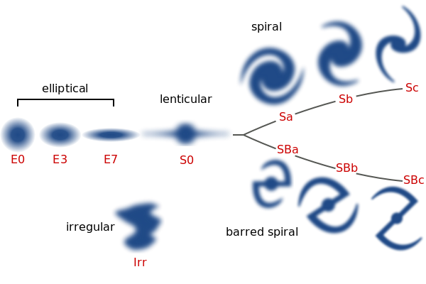

My Thesis - a Popular Level Summary
S0 Galaxies
Just the way atoms or molecules can be considered as the basic building blocks of the material around us, when we see the Universe on a large scale, galaxies can be viewed as it's basic building blocks
These galaxies come in a variety of shapes as shown on the diagram below. How these different galaxies are related to each other is very important to understand the overall history of formation of our Universe. A very specific class of galaxies is known as the S0 class. Consider the spiral galaxies on the right of the diagram below. This has two main components in general - a central structure we call bulge and an extended flat structure called the disk. S0 galaxies are spirals but without the spiral arms. Hence the 0! Did these S0s come from ellipticals? Are they transformed spirals? Or are they something unrelated? Or a combination of these? These were the questions that drove my thesis research.

A Photometric Study
An image of a galaxy tells us about the possible patterns in the brightness distribution of the galaxy. One can then find mathematical functions which can be used to describe the brightness distribution. Every such function is characterized by some parameters.
Now, suppose I collection 100s of galaxies and model each galaxy's image, I'd get the set of model parameters for each galaxy. A statistical analysis of all these 100s of model parameters reveals a tight relationship between them. One can then invoke the laws of Physics to understand under what conditions such relationships can exist. This allows us to infer the physics of these galaxies though as of now, we cannot even hope to reach and inspect these objects!
A major part of thesis involved painfully collecting data obtained from the Spitzer Space telescope, processing these data, cleaning it up & modelling their light or brightness distribution. After this painful process, I leveraged statistical tools to find relationships. This allowed me to constrain which formation process is most likely responsible for a specific class of S0 galaxies.
In a nutshell, what I inferred was that this special subset of S0 galaxies were spirals once upon a time. By virtue of various processes, the rich gas content responsible for the spiral patterns was stripped out and started fading. today, these galaxies resemble what we call s0 galaxies.
Spectroscopic Study
Photometric studies i.e. studies done using images are limited in the amount of information they can give us. A spectrum on the other hand can unravel far many more details about individual objects. thus the second part of my thesis focussed on using the Southern African Large Telescope (SALT) to obtain rich spectral information about these objects. (a spectrum basically measures brightness of the object at different wavelengths.)
SALT was a relatively new telescope when i was getting started. so, the precise methods by which one could process and clean the data were not fully known. A good part of thesis research was spent in developing complex python codes which could be used to clean up the data and obtain the final usable spectrum.
Once this was in place, I could use very complex modeling techniques that basically answer the following question - how much percent of light in this galaxy is coming from stars of different ages? So, if a galaxy had 95% of its light coming from very old stars, I'd conclude that most of the galaxy formed a very long time back. But long time back , the conditions in the universe were different and so there could only be a limited number of processes that would have been responsible. Opposite would be true if I found galaxy light to be dominated by younger stars.
A major conclusion from this work was that while statistically, the special set of S0 galaxies I worked with were indeed showing certain trends, when inspected on a case by case basis, each object was unique. Each object has certain peculiar features and told a story quite different from the other.
My thesis is downloadable from this link: Structure, Properties and Formation Histories of S0 Galaxies